The document is meant to enumerate various enhancements that will be available in Eclipse Platform release 3.3 from milestone 5. The readers are assumed to be familiar with Forms in general and have some working experience with them. If that is not the case, a good place to start would be Eclipse article: Eclipse Forms: Rich UI for Rich Client Applications as well as online documentation.
Most of the features listed in this document will be available in the integration builds leading to M5 and can be used with the caveat that there is a small change that APIs can change before they are frozen in the M5 stable build. We make these changes only if absolutely necessary and not without the prior warning on the mailing list.
The majority of changes in 3.3 are related to the way forms heading is handled. Much more can be done now in the heading and the changes that were first introduced in 3.2 are clarified and evolved further.
As before, the heading area is initially rendered using the overall
background color of the form. Clients still have an option to decorate this area
using two mutually exclusive approaches: by providing a background image or by
providing an array of colors to render a gradient. However, either approach is
problematic when it comes to making the design hold on all the platforms and
windowing systems Eclipse can run on. For this reason, we have elected to
provide one combination of colors for title background rendering that will work
well everywhere. The color used to render the title are stored in the
FormColors class under the following keys (defined in IFormColors
interface):
H_GRADIENT_STARTH_GRADIENT_ENDH_BOTTOM_KEYLINE1H_BOTTOM_KEYLINE2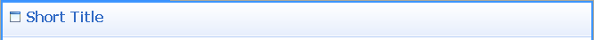
These colors are computed by starting from system colors as provided by
SWT, then blending them with the background at various degrees depending
on the windowing system/skin employed. They are guaranteed to work well
everywhere Eclipse runs, including accessibility use cases such as 'high
contrast black' and similar. Nevertheless, in order to turn this rendering on,
you need to call FormToolkit.decorateFormHeading(Form).
The decision to use the provided rendering should mostly depend on what is in the header of your form. If all you do is set the title, you should probably leave the form without it. If, on the other hand, you use heading tool bar, heading client, or use new message handling, it may be beneficial to decorate the title area in a stronger way using the provided method.
As first introduced in 3.2, forms can now have either one or two-row header. As before, it is the head client that causes the form to switch to the two rows. However, while in 3.2 head client was position on the same raw as the title, in 3.3 head client is pushed to the second row. Tool bar now stays in the same raw as the title all the time. This change is a side-effect of the changes in message handling. There is nothing you need to do to react to the change, but it will affect your forms if you chose to take advantage of the 3.2 API. Since the head client has the entire second row for itself, this will be a good thing in most cases.
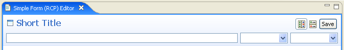
Although we just claimed that tool bar stays on the same row, there is
actually an exception. A new API Form.setToolBarVerticalAlignment(int)
allows for setting the alignment to SWT.BOTTOM and therefore
placing the tool bar on the second row. By default, this setting is
SWT.TOP. If you know that the head client will not occupy the entire
width of the space it has for itself, you can push the tool bar down to be
closer to the form body.
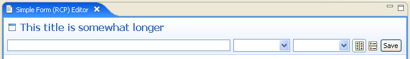
In 3.2, we introduced methods to show typed messages in form heading. The
messages of types defined in org.eclipse.jface.dialogs.IMessageProvider
were shown in an animated tray that would overlap the portion of the header when
visible. We have decided that in many situations the message may be obstructing
the useful widgets. If the problem is caused by the controls in the head client,
the message tray would obstruct the very controls that are the cause of the
message's appearance.
In 3.3, the message is now shown next to the title text. In the normal layout, it will use the area between the title and the tool bar (if used) or the right edge of the header. As before title text will wrap if there is not enough space to display it on one row. In contrast, message text will shrink and replace portion of the text with ellipses (...). The full text will be available as a tool tip (similar to other places in the workbench).
In addition to showing the text of the message, the image appropriate for the
message type (error, warning, information) will be shown before the title. If
there is an image already, it will replace the image until the message is reset.
The text of the message will also indicate the message type. We have chosen
fixed system colors (SWT.COLOR_RED for errors and
SWT.COLOR_DARK_YELLOW for warnings) because they work equally well on all
windowing systems and color combinations we tested.
By default, messages are rendered as static text. If a hyperlink handler is
added to Form using the new API
Form.addMessageHyperlinkListener(IHyperlinkListener), the message text
will be rendered using a hyperlink and the handler will be notified about its
standard hyperlink events.
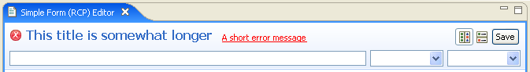
Also see the section on message manager below.
The area to the left of the title (in LTR locales) is reserved for the form image. This area is only used if the image needs to be displayed. In 3.3, this area is shared by three potential image groups, in increasing priority:
Form.setImage(Image) APIForm.setBusy(true) is calledThe appearance of image of any priority when the image of lower priority is not already present will cause the form to reflow. In extreme cases, the reduced space to render the title may cause the title to wrap, pushing the form body down. Keep this in mind if layout stability is important to you.
In addition to the tool bar manager, a new menu manager has been added to
forms in 3.3. It is accessible through the new API Form.getMenuManager().
When this manager is not empty, a drop-down arrow will appear next to the title
bar and clicking on it will open the managed menu. The same menu will also
available as a pop-up menu anywhere on the title and the title image.
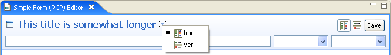
There are use cases when form title represents an object that other workbench
parts can interact with. In 3.3, we added the ability to support dragging of the
title into these targets, as well as having the title serve as a drop target for
the compatible objects. New APIs Form.addDragSupport and
Form.addDropSupport are added to handle this scenario.
When drag and drop support is activated by using the new APIs, title area is rendered differently. A border is painted around the title in two colors: moderately dark when the mouse is in the vicinity of the title, and dark when it is directly over it. We added this visual feedback to indicate the user that the title can be manipulated directly. The colors for this indication are part of OS/skin dependent color computation and shows well on all the platforms we tested it on.
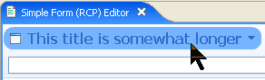
A new color computation algorithm is used for all colors allocated by
FormColors class. In addition, rendering of sections when TITLE_BAR
style is used has been slightly revised. Section headers are now using the same
color as the form title, which is also applied to the toggle button.
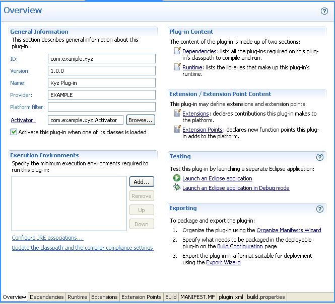
When some sections on a page have text client (a control that can be placed in the section title bar on the right), two problems arise:
TITLE_BAR style have the envelope and the
gradient painted to include the text client, causing the title bar to be
tallerStarting from release 3.3 M5, this problem has been addressed in two steps:
TITLE_BAR
style are now painted without taking text client into account. This results
in a uniform decoration height that is only controlled by the chosen font
for the title text.ExpandableComposite.clientVerticalSpacing and
ExpandableComposite.descriptionVerticalSpacing to compensate for the
difference so that the rest of the content in side-by-side sections lines
up.Since the difference between text and text client heights is dynamic, it is
not possible to pick a 'magic number' to correct the vertical alignment issues
in a portable way. For that reason, a new method has been added to
ExpandableComposite - getTextClientHeightDifference(). This
method will compute the currently valid difference that can be applied as
described above. Note that making modifications to the text client or changing
the text font invalidates this value and the method must be called again.
The following sample code shows the application of this method for the picture below:
Section s1 = createTableSection(form, toolkit, "First Table Section", true); Section s2 = createTableSection(form, toolkit, "Second Table Section", false); s2.descriptionVerticalSpacing += s1.getTextClientHeightDifference();
As a result, the description of the section s2 has been pushed
down to compensate for the tool bar set as a text client of the section s1:
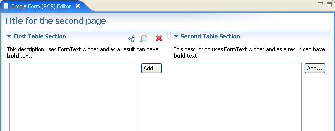
In most implementations of the multi-page form editor, each page contained a
separate form with its own title and other heading controls. There is a use case
for an editor that has multiple pages with one fixed header. In order to support
this use case, a new class has been added in 3.3 called
SharedHeaderFormEditor. This class extends FormEditor and
configures is such that the tabbed folder containing pages is placed inside a
managed form's body, leaving the heading unaffected by page changes.
The common header is configured by extending the class and implementing the
protected method createHeaderContents(IManagedForm headerForm). The
header form is included in the life cycle management of the editor (refresh,
commit etc.). For this reason, it is recommended to wrap the head client in an
IFormPart and register it with the header form in case head client
is used. This will ensure that the controls in the head client that can make the
editor dirty are included in the life cycle management.
Since the header form takes responsibility of the common header, form pages that are normally added to this editor must not have the heading themselves. This is easily accomplished by not setting the title on individual pages' forms or otherwise calling any other method related to the heading.
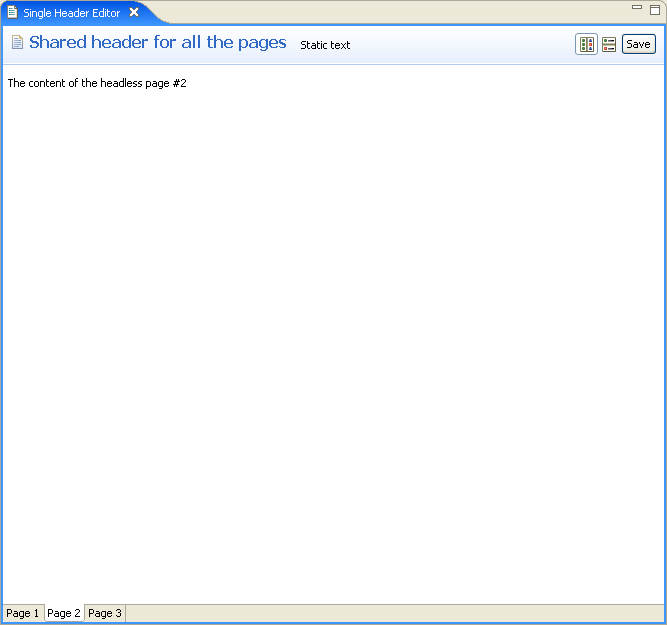
A new manager is now accessible via the IManagedForm interface
that makes message management in forms much easier. The manager is available as
an interface (IMessageManager) and has the following roles:
The message manager uses JFace support for control decoration to render the appropriate image near controls that have messages associated with them. What makes message manager convenient is that clients only manipulate messages and message types, while the manager handles control decoration at the SWT/JFace level.
Clients who want to take advantage of this new facility should refrain from setting messages directly using Form APIs and use the manager instead. There are methods to add and remove general purpose messages, as well as those associated with controls. The manager will keep track of all of them and provide a suitable summary message in the header. Clients who use form-based multi-page editors already have managed form instances in the pages. All you need to do is ask for the manager instance and use it.
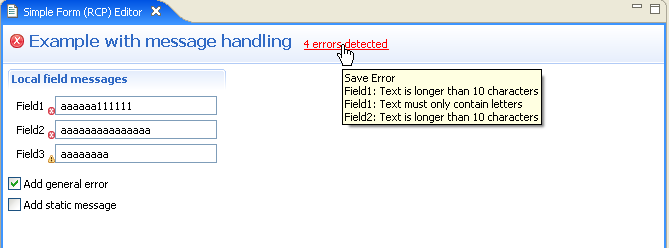
If message label is configured to be a hyperlink, href
property of the hyperlink event is set to be an array of IMessage
objects that form the summary message. This array is used internally to compose
the tool tip text. Clients can also use this information to do interesting
things. For example, a lightweight window can be shown with individual messages
as hyperlinks, allowing users to go to each one (this feature makes much more
sense for shared-header editor described earlier, where the error may have
occurred on a currently inactive page). Another possible use of this data can be
to offer the user to automatically fix the errors if possible.
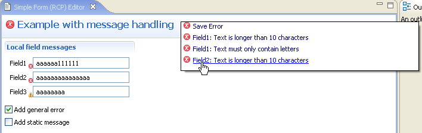
The most significant change in 3.3 is that we moved all the color constants
into IFormColors interface. The existing constants in
FormColors are now deprecated since they are just pointing at the
matching constants in IFormColors.
All new APIs are marked using '@since 3.3' in javadoc. Go to the source code in the Eclipse builds for details.